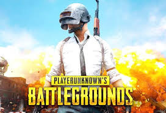
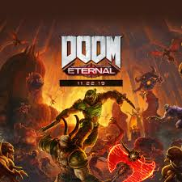
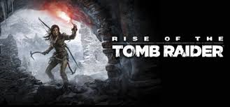
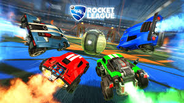
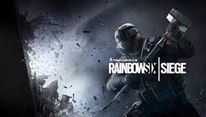
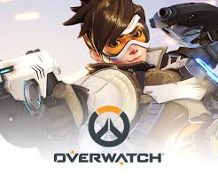
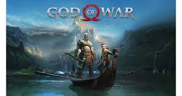
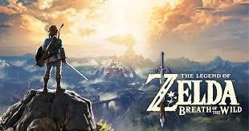
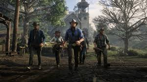
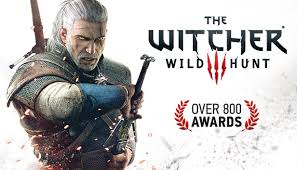

After playing dozens of video games over the past few years, I have come up with a conclusion for the best video games since 2015. Even though thousands of video games have been produced since 2015, only some are worth even playing. Despite the numerous amount of awful video games, there have been a few which exceeded my expectations. After playing many of the most popular games, I think that I have come up with a conclusion on the best video games since 2015 varying from RPG's to FPS games across all platforms.
This game is basically Fortnite, but with better graphics and gameplay. This third person shooter has plenty of guns and weapons that the player may loot and the objective is to kill the other people and be the last one alive. In this battle royale, you may choose to go either solo, duo or squad(4 people). Despite the quite long loading and screentime of this game, the gameplay itself is very addictng and fun. The difficulty of this game provides players with even more enjoyment, since it has a huge world, is realistic, and has amazing graphics.
The world famous game Doom stands out as one of the best single player campaign games ever. One of the main selling points of doom is the violence. The blood and gore of this game makes it stand above the others in terms of fun and enjoyment. This new Doom offer stunning graphics and the new animations are almost perfect. Doom’s reward system allows players to access powerful upgrades and abilities in order to strengthen your character. The boss battle are memorable and excellent, to the points on which i have over 200 hours on this game.
This game is an action adventure game packed with enjoyment. One of the main perks of this game is that we get to see the evolution of Lara, the main character as we play the game. This game requires the player to survive in a fast paced game, where you as the player has to fight, get food and survive all at the same time. This game offers a stunning world to explore along with difficult puzzles, a dark storyline and amazing combat.
Imagine the world famous sport soccer and cars combined into one game. Rocket league is basically soccer with cars. This game has hundreds of variety of cars. Depsite this game being very simple, it is extremely addicting to play. The controls are fluid and it feels like you are actually the one driving the car. This game has all of the rules of soccer, but uses cars instead of players. This game extremely addicting to play, it's like playing soccer in real life with cars.
This game started out as a FPS game with mountains full of bugs and glitches created by one of the biggest video game companies, Ubisoft. Despite the numerous bugs, Ubisoft decided to not trash the game completely, but to restore it. This game made one of the biggest comebacks in history, since now it has over 40 million active players worldwide. This skill based FPS is also based on strategy, where players are able to get creative with their strategies to win. On most games, even FPS games, I ussually don't play past 100 hours, bu I have well over 800 on this game. There's something about this game that just makes players want to play it even more, to try out new strategies or to just try to win a game. This game has over 50 different and unique operators that players can play as. Despite some obvious issues such as server lag or occassionally bad matchmaking, this game has become the top 5 most played game on PC.
Overwatch is one of those games thats won tons of awards, even being the Game of the Year for 2016 without any majoy flaws. In this FPS game you get to play as dozens of characters each with their own unique abilities and skill sets. This game also has amazing servers without many bugs or glitches in the game. The gameplay itself is fantastic, which makes playing with friends even more fun, since you are able to communicate and have a higher chance of winning the game.
Like many games of 2018, the graphics are amazing. This game is set in a Norse Mythology inspired world with monsters roaming everywhere. This game mainly focuses on the main character, Kratos and his relationship with his son. They begin their adventure when Kratos’s wife dies and to carry out her wishes. The combat itself is amazing, almost on the level of the Dark Souls franchise. The maps are huge, with monsters around every crevice. This game has hundreds of obstacles blocking you from a certain part of the map and also some puzzles.
This game is set in the fantasy world of Hyrule, a post-apocalypse world. This world is huge and stunning to look at. Starting the game, you are able to enjoy Hyrule, all of the land, puzzles and enemies. This game is extremely well executed, despite the occasional lag in the forest. Link also needs survival stuff, such as food, clothes and gear. This game allows players to interact with almost everything, such as puzzles, trees or terrains. Each terrain has a different ecosystem, and you as a player need to learn them.
First of all, this game has amazing graphics. Due to the new 4k PS4 Pro, Red Dead Redemption looks stunning absolutely on the TV. The gameplay itself is extremely immersive, with almost 50 hours of gameplay. Each quest is unique and the side quests are filled with story. Every single thing, from tiny animals to humans are interactions. Players are able to explore the massive world and interact with basically anything, such as player poker in a bar or taming wild animals. Even the smallest characters are given lots of attention, based on their personalities, clothes and actions. This game is quite exceptional, but it lacks consistency of action and story telling.
This game is basically a masterpiece. Made by one of the best gaming companies, CD Projekt Red, this game sold over 20 million copies sold worldwide, surpassing the Polish economy. This game has recieved millions of positive reviews both from the community and game reviewers with well over 800 awards with numerous Game of The Year awards. Despite the fact that this game has a lower generation of graphics from the other games, the background and graphics are still stunning to look at with a budget of only $80 million. You get to play as Geralt, a Witcher, someone who hunts down monsters for money and take on Witcher contracts. The main selling point of The Witcher 3 is it's story. The story is extremely well written and have immense detail. Even the smallest side quests feel like actual main quests with each one leading with a story about a dead family memebr or someone that they care about or just to move the plot further. The amin quests feel perfect, and your impact as a player in the game decides the fate of huge cities, small towns or whether or who wins a huge war. This game is rich in story telling and explores a fictional world where cities are in chaos due to poorness or corrupt rulers. Not only is the base story, which is 50 hours of main story, well written and extremely immersive, this game also comes with two massive DLC expansions. These expansions were considered to be even better than the actual game itself with well over 60 hours of gameplay. These DLCs were considered to be the best games of 2016 and included a whole new massive world rich with story and different characters. Overall this game is definetly the best game past 2015, and even may be the best game ever created.
What your favorite game?